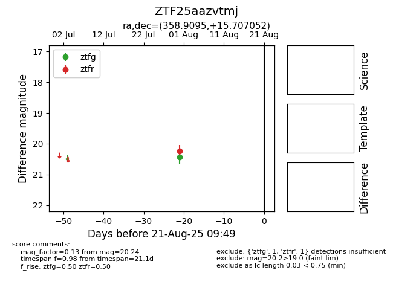

Target ZTF25aazvtmj at 2025-08-21 09:49, see:
FINK: fink-portal.org/ZTF25aazvtmj
Lasair: lasair-ztf.lsst.ac.uk/objects/ZTF25aazvtmj
ALeRCE: alerce.online/object/ZTF25aazvtmj
alt names
ZTF25aazvtmj (ztf,alerce)
coordinates:
equatorial (ra, dec) = (358.9095,+15.70705)
galactic (l, b) = (103.7459,-45.07587)
photometry
last ztfg=20.44, ztfr=20.24
1 ztfg, 1 ztfr detections
